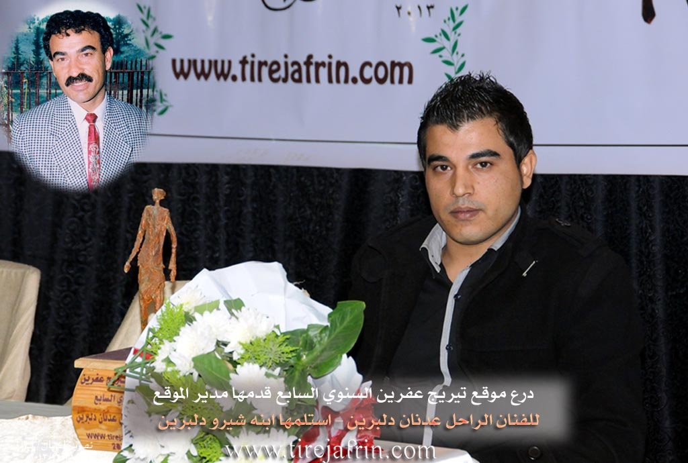

General Information
Nahiya (Subdistrict)
Şera
Also Known As
Deir Sawan, Dêr Siwanê, Dêrsiwan, Dêrsiwaên, ديرصوان
Families, Clans, etc.
Dewrîş, Hec Omer, Reşê Xelê, Tewrî Silav, Çûçik Bil, Şêx Ismaîl Zade

Photos



Basic Information about Dêrsiwanê
Source: Ax û Welat
Hills: çiyayê Şerwan
Shrines: tirba Adnan Dilbirîn
Other Landmarks: gundê Hêderê
Summaries
I. Summary from TirejAfrin Site (English) of Dêrsiwanê
Source: https://www.tirejafrin.com/site/kura%20afrin%20%20sheran%20-%20der%20sawan.htm
It is stated in the book Çiyayê Kurmênc Efrîn A Geographical Study: Dêrsiwan / 3802 inhabitants - 2090 hectares - 12km - 480m /:
It is a name for a monastery (Deir) and an ancient archaeological site.
Dêrsiwan: A large village. West of it, at a distance of about 2km, there are two bridges from the Roman era, which still serve local transportation to this day. It is an important center for the Hec Omer family, known in the history of Çiyayê Kurmênc in the past, and also for the Şêx Ismaîl Zade family.
It is stated in the book Efrîn ... Her River and Her Green Hills:
Dêrsiwan: A village in Çiyayê Kurmênc following the Şeran township, Efrîn area, Heleb governorate, (3673 inhabitants). It is a large village located on a limestone plateau with white clay soil, distant from the town of Şeran by about 11km towards the northeast.
It is bordered to the north by a slope and the valley of the course of Çemê Efrîn and Sabûn Siyê and the village of Şiltah; to the south by a valley, a plain, and the village of Wêrakan; to the east by a mountain range planted with olive and forest trees and the village of Îkî Dam; and to the west by a valley, a plain, the course of Çemê Efrîn, and the village of Zeytûnak.
The number of its houses is about 300 houses, and the age of the village is about 400 years. Available in it are a municipality building, an electricity network, and drinking water from artesian wells and a collection of water pools. It contains a primary school, a health dispensary, a mosque, a police station, and a newly created municipality building. Its old dwellings are stone made of mud with wooden roofs, and the modern ones are of stones and cement. The paved road passing through its center connects it to the neighboring villages up to the castle of Nebî Hûrî and the archaeological Roman bridge, which is about 1km away from Dêrsiwan.
The residents of the village work in the cultivation of olives, vineyards, grains, and other fruit trees. There are two modern olive presses in the village. As for Çemê Efrîn, it passes north of Dêrsiwan under an old Roman bridge, 92 meters long. It passes under a second Roman bridge north of the town of Dêrsiwan, and the two branches flow west of the town of Dêrsiwan about 2km away into the main course of Çemê Efrîn. The two bridges are supported by seven ancient columns, and this bridge is narrow, allowing the passage of only one car.
Among its most important families is the family of Fayîq Şêx Ismaîl Zade. It is one of the old villages in the Şeran township. It is mentioned that the late artist Ednan Dilbirîn was one of the sons of this village.
Village Mukhtar: Hemo Henan Husên
Sources of Information:
- Book: جبل الكرد (عفرين) دراسة جغرافية Çiyayê Kurmênc (Efrîn): A Geographical Study by د. محمد عبدو علي Dr. Mihemed Ebdo Elî.
- Book: عفرين .... نهرها وروابيها الخضراء Efrîn... Her River and Her Green Hills by عبدالرحمن محمد Ebdulrehman Mihemed from the village of Qetme.
- Studies of Navenda Tirej Soft / Ebdulrehman Hacî Osman.
- Some residents of the villages.
Preparation and Execution: Manager of Tirej Efrîn site: Ebdulrehman Hacî Osman 20/12/2013
II. Summary of Dêrsiwanê from Afrin 366
Source: https://www.youtube.com/watch?v=G7lzK3nICTs
The documentary presents a detailed ethnographic portrait of the village of Dêrsewan, located in the Şera district of the Efrîn region. The hosts describe Dêrsewan as a large and ancient settlement ("Gundekî Kevnar") consisting of approximately 400 households. The village is culturally significant for its reputation as a home to bards and singers, most notably the late Adnan Dilbirîn, a celebrated figure in the region, as well as the contemporary singer Hesen Şêxo.
The narrative focuses primarily on the preservation of traditional agricultural and domestic life through interviews with village elders. The hosts visit the home of a local woman referred to as Xaltî (Auntie), possibly named Xecê, who demonstrates various household artifacts. She explains the function of the Meşk, a churn made from goat skin used to process yogurt into butter and buttermilk. She also displays a Teşî, a wooden spindle used to spin wool into yarn for making carpets and socks, and discusses the traditional Sêl, a metal griddle used over an open fire to bake bread. She emphasizes the health benefits of natural foods grown in their gardens, such as walnuts and tomatoes, and describes how the villagers endure harsh winters by using tezek (dried animal dung) for heating when snow blocks the roads.
A significant portion of the footage features an elder named Hesen, who provides a comprehensive tour of pre industrial agricultural tools that were once essential for survival in Dêrsewan. He showcases the Cehceh, a threshing sledge fitted with sharp stones or iron blades, which was driven over wheat on the threshing floor to separate grain from chaff. He explains that villagers, regardless of age or gender, would sit on the Cehceh to add weight while driving the oxen. Hesen also describes the Mewlî, a wooden drag used to level the soil after plowing, and the Gîs, a traditional wooden plow tipped with an iron share called a Sikê. He details the harnessing equipment, specifically the Nîr (yoke) which connected a pair of oxen using parts called Hîs and Zengî. He notes that the farmer would control the oxen using a Mesas, a goad stick with a nail at the tip.
Throughout the documentary, the speakers reflect on the transition from this labor intensive past to the modern era of tractors and machinery. While acknowledging the physical difficulty of the old ways, they express a sense of nostalgia for the "bereket" (blessing) and communal spirit of that time. The village is portrayed not just as a physical location but as a repository of memory, where elders like Hesen and Xaltî maintain the knowledge of their ancestors. Specific greetings are sent to residents and individuals originating from the village, including Kawa, Miş'el, Ebû Îzet, and Bavê Kemal. The segment concludes with a plea to the younger generation to respect their elders and preserve their cultural heritage.
II. Summary of Dêrsiwanê from Ax û Welat 3
Source: https://www.youtube.com/watch?v=yX0aQZbMUNU
The documentary focuses on the village of Dêrsiwan, located in the Efrîn region of northwestern Syria. Geographically, the village is situated within the mountainous area known as çiyayê Şerwan. It is described as a relatively small settlement, consisting of approximately 40 households. To the west, the village shares a border with the neighboring settlement of gundê Hêderê.
Dêrsiwan is primarily distinguished as the birthplace and final resting place of the late Kurdish artist Adnan Dilbirîn. The village history presented in the transcript is deeply intertwined with the life and family of this artist. The documentary team visits the family home, specifically the room where Adnan was born and later celebrated his wedding. The site has become a place of remembrance, where his surviving family members, including his sister Melek and brother Mihemed, recount their family history.
The social structure of this specific household is detailed by Melek. The family consisted of parents (both deceased) and seven children: four brothers—Adnan (the eldest), Ebdilrehman, Mihemed, and Gunay—and three sisters, including Melek and Emîne.
A significant portion of the village's narrative centers on the origin of the artist's name, which is rooted in a specific tragedy that occurred in Dêrsiwan. Melek explains that Adnan was performing his military service in Qamişliyê when their mother fell ill. She suffered for twenty days before passing away. Adnan was unaware of her condition and returned to the village expecting to see her, only to be told she was in the hospital to soften the blow. When he realized she had already died and been buried without him seeing her, he was overcome with grief. He threw himself to the ground in despair. From that moment, he adopted the name Dilbirîn (Heartbroken), declaring that his heart was wounded because he never had the chance to say goodbye to his mother.
This event altered his relationship with the village. Adnan felt he could no longer live in Dêrsiwan because the environment constantly reminded him of his mother and his grief. Consequently, he migrated to Heleb (Aleppo), where he eventually married and established his career as an artist. Despite this migration, his connection to Dêrsiwan remained strong, and he is buried there today. His grave, referred to as tirba Adnan, serves as a local shrine and a focal point for visitors paying respects to his contribution to the culture of Efrîn.
II. Summary of Dêrsiwanê from Ax û Welat 4
Source: https://www.youtube.com/watch?v=bXTjtOYCs9o
The village of Dêrsewanê, also referred to as Dêr Siwan, is a prominent settlement located in the Şera district of the Efrîn region, approximately 11 kilometers from the district center. Established over 400 years ago, the village currently houses around 400 families. Its origins are deeply rooted in the local landscape; elders like Apê Reşîd explain that the village was originally situated on a nearby hill called Sîwan. The name Dêr Siwan implies "The Church of Siwan," derived from a small church (kinîsok) that once stood on that high ground. Villagers recall digging graves on the Sîwan hill and discovering ancient large jars (kûz) filled with beads and gold, evidence of a much older civilization at the site. The community eventually moved down from the hill to the lowlands to be closer to water sources and fertile land.
The geography of Dêrsewanê is defined by its proximity to the Çemê Efrînê (Afrin River) and significant historical architecture. Two ancient bridges, known locally as Pira Romanî, span the river near the village. These bridges are described by residents like Bavê Hesen as critical historical connectors between Kilis, Bakurê Kurdistan, and Rojava. The bridges, standing on seven pillars, are associated with the nearby historical site of Kela Hûrî (also referred to as Nebî Hûrî). The local water sources are highly valued; specific springs mentioned include Kaniya Germikê, also known as Ava Sabûnsuyê ("Soap Water") due to the soapy appearance of its ripples. These waters flow from Dîlok (Antep) and villages like Qernebiyê in the north, converging at a flat meadow area locally called Ade before reaching the Sêdda Meydankê.
Culturally and historically, Dêrsewanê has weathered difficult periods, including the Frensis (French Mandate) era and the hardships of seferbîrlik (mobilization), during which ancestors traveled to Kilis to survive famines. In contemporary times, the village is celebrated as the home of the renowned late artist Adnan Dilbirîn. His legacy is preserved by his brother Nebî and local musicians like Hesen Şêxo and Ehmed Elî, who note that Adnan Dilbirîn revolutionized local culture by introducing the heavy dance style (govenda giranî) to the region. The village maintains its traditions through the Koma Şehîd Çekdar folklore group and the preservation of domestic arts, with women like Meyrem continuing to prepare traditional dishes such as Hevmaşliya and Meqlûbe.
II. Summary of Dêrsiwanê from Ax û Welat 5
Source: https://www.youtube.com/watch?v=Nw4IJvnkUHA
The documentary explores the history and daily life of the village of Dewrîş, located high in the mountains of the Efrînê region. According to a village elder named Xelîl, the settlement was founded approximately 250 years ago and takes its name from its original founder, Dewrîş. Originally, Dewrîş lived in the plains at Deşta Kitixê with thousands of sheep. Because that area suffered from water issues over time, he migrated to a hilly peak called Serî Hêr near Darê Hûda before finally settling down in Qişla, which is the exact location where the village stands today.
During the early days of the settlement, a friend named Buxir from the nearby village of Miskê provided the community with access to three rainwater cisterns near Gelî Buxir to water their flocks. Xelîl points out a specific white house now belonging to the Tewrî Silav family, noting it was the original home of Dewrîş.
The social structure of the village is highly unified, consisting of 100 households that all stem from two primary families. Dewrîş had a son named Çûçik Bil, and he had a close friend named Reşê Xelê. Reşê Xelê brought his family to the village, and over the generations, the descendants of Çûçik Bil and Reşê Xelê intermarried. Today, the family of Xelîl accounts for 70 households, while the other family accounts for 30. Despite historical migrations taking some relatives away to Helebê, Tirkiyê, and Ewrûpa, as well as nearby settlements across the border like Qirixxanê and Tiligolçerane, the core community remains closely bound together. The speaker expresses deep regret over the borders that eventually divided Kurdish lands.
Because Dewrîş is situated at a very high elevation compared to surrounding villages, residents are able to see the distant lights of Kela Helebê at night. The rugged mountain terrain makes modern agriculture difficult. The documentary features a farmer named Akaş Îsmaîl, also known by his nickname Bavê Rinad, who comes from the neighboring village of Werîşê. He explains that modern tractors cannot easily navigate the steep and rocky olive groves, so farmers still rely on traditional plows drawn by animals using a wooden yoke.
The village sustains its cultural roots through traditional food and music. Women prepare local dishes such as babesîr using grape molasses along with flatbread known as nanê sêlê. Local children like Zehra and Xecê are also shown playing in the fields. At the end of the segment, villagers are seen singing the classic regional song Ez Xerîbê Welatê Min, emphasizing their enduring bond to their homeland.
Transcriptions and Subtitles
| Source | Video | Subtitles | Transcript |
|---|---|---|---|
| Afrin 366 1 | Watch Video | Download SRT | View Transcript |
| Ax û Welat 1 | Watch Video | Download SRT | View Transcript |
| Ax û Welat 2 | Watch Video | Download SRT | View Transcript |
| Ax û Welat 3 | Watch Video | Download SRT | View Transcript |
Foundation/Origin Information of Dêrsiwanê
It is an important center for the Haj Omar family known in the history of Jabal al-Kurd in ancient times, and for the family of Sheikh Ismail Zadeh as well.
Source: TirejAfrin Site
founded by Kurdish citizens. The settlement was originally located on a nearby hill and named Sîwan, but was relocated to its current position by the river due to a lack of water.
Source: Ax û Walat Transcript
Possible Village Name Meaning of Dêrsiwanê
A name for a monastery and an ancient archaeological site.
Source: TirejAfrin Site
Originally named Sîwan, it was renamed Dêrsiwan after being relocated.
Source: Ax û Walat Transcript
V. Links
- Tirej Afrin:
https://www.tirejafrin.com/site/kura%20afrin%20%20sheran%20-%20der%20sawan.htm - Ax û Welat:
https://www.youtube.com/watch?v=bXTjtOYCs9o - Drone video:
https://www.youtube.com/watch?v=ctv7ZsZpcTI - Video:
https://www.youtube.com/watch?v=dKZHWJkpj7U - Link:
https://www.youtube.com/watch?v=dSy4L4MpWWU - Ax û Welat:
https://www.youtube.com/watch?v=yX0aQZbMUNU - Afrin 366:
https://www.youtube.com/watch?v=G7lzK3nICTs - Ax û Welat:
https://www.youtube.com/watch?v=Nw4IJvnkUHA